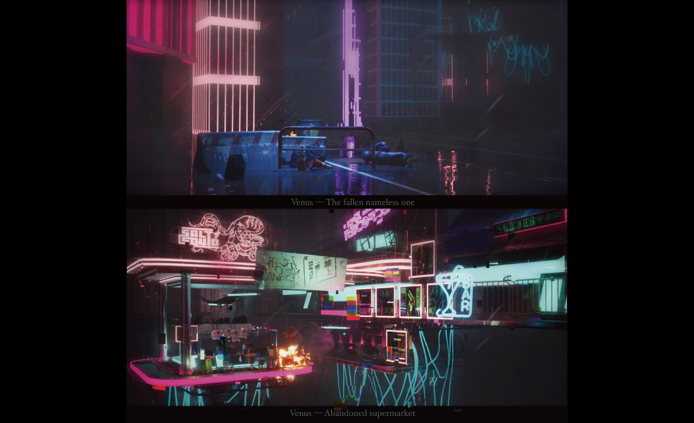
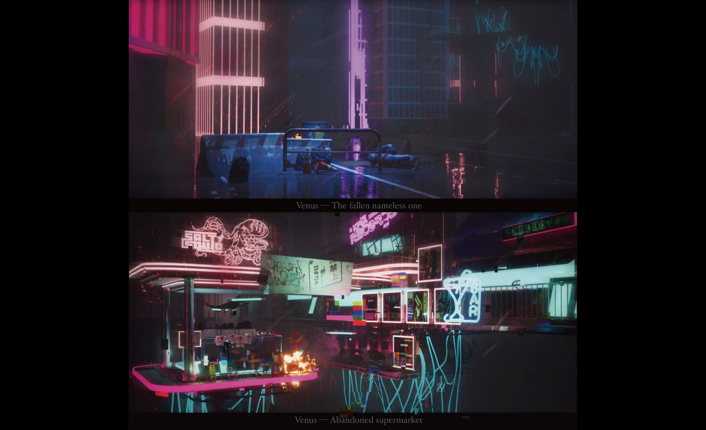
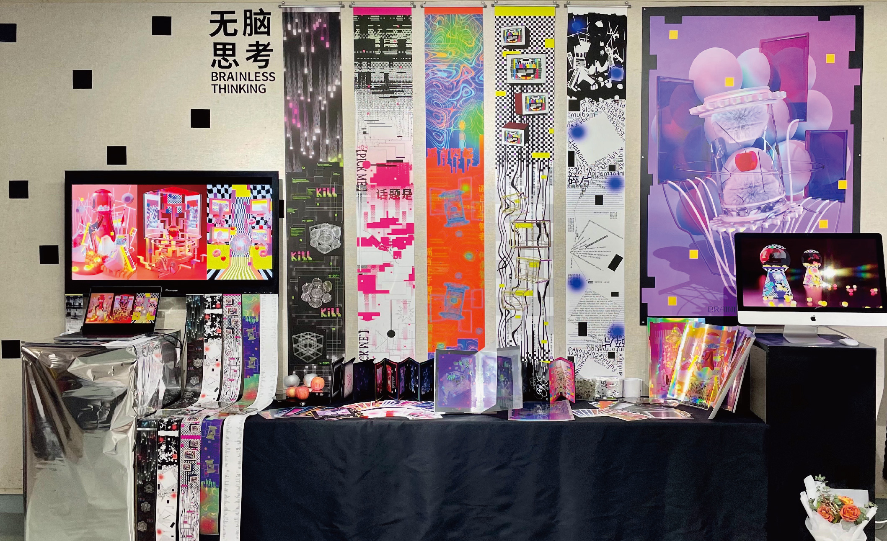

The "Venus" design uses gray tones, metallic textures, and strong contrasts to evoke Venus's mystery and futuristic ambiance. Low-angle shots and fog effects simulate the planet’s dense atmosphere, while light and shadow enhance spatial perception, delivering a planetary exploration experience that is both realistic and imaginative.
"Raise your head, and you'll see the gods three feet above" — The "Mazu Culture" blind box series blends traditional Mazu faith with modern design. These creative products preserve and promote Mazu culture, offering unique, story-rich items that appeal to contemporary tastes, while also supporting local economic and tourism growth.

This reflection addresses the impact of the information age on “mindless thinking” and explores visual communication design's role in extending planar space. It examines how the digital internet's transcendent qualities affect our perception of touchable planar spaces and investigates how digital connectivity reshapes our "brain space." The goal is to understand the evolving interplay between digital influence and spatial perception in design.
This issue of the Anti Rules journal features Xie Xinyi from CAFA and her graduation project, "Home." It explores elements from Lingnan culture, like ancestral halls and flower parade floats, through spatial and human perspectives. The project uses distinct silhouettes to create different orders in these cultural realms, focusing on spatial design in clothing and reconfiguring elements to express a rebellious force against rigid order.
{kind=link}
{kind=link}
{kind=link}
{kind=link}